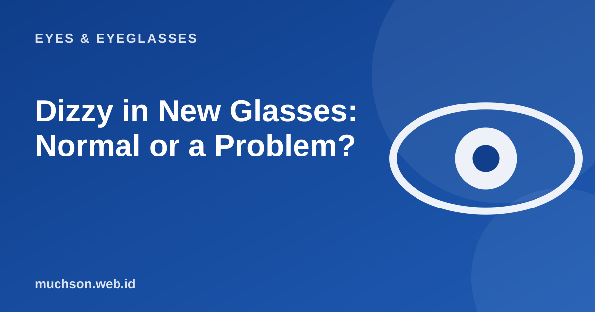

Home › Articles › Eyes & Eyeglasses
Eyes & EyeglassesDizzy in New Glasses: Normal or a Problem?
This is one of the most common complaints after picking up new glasses. Often it is normal and fades within a few days. But sometimes it points to a problem with the prescription or the fitting, so it helps to know the difference.

Why can dizziness happen?
Your brain is used to the way you saw before, even if your vision was not perfectly corrected. When the lens power changes, the brain needs time to adjust. Changes in cylinder, axis or progressive lenses are usually the most noticeable. The shape of the frame and the distance of the lenses from your eyes also change how things look.
Normal or not? Check this table
| Complaint | Usually normal? | If it continues |
|---|---|---|
| Mild dizziness, the floor seems curved | Yes, in the first 1-2 weeks | Go back to the optical shop if it lasts more than two weeks |
| Straight lines look tilted | Yes, especially with a new cylinder | Check the cylinder axis and the fitting |
| Nausea or severe dizziness | No | Stop wearing them and get checked right away |
| One eye looks much blurrier | No | Check the prescription and the fitting |
| Hard to look to the side with progressives | Yes, part of adjusting | Check the lens height if it continues |
How to adjust faster
- Wear the new glasses all the time; do not alternate with the old pair.
- Walk on flat ground first before using stairs.
- Avoid long drives in the first days if you still feel dizzy.
- Make sure the frame fits and does not slide down.
- Clean the lenses; smudges make things less comfortable.
- If you are still not comfortable after two weeks, go back to the optical shop.
Do not "force" yourself to wear glasses that keep making you dizzy for days. Go back to the optical shop with your glasses and prescription. Re-checking the fitting, pupil distance and size often solves the problem.